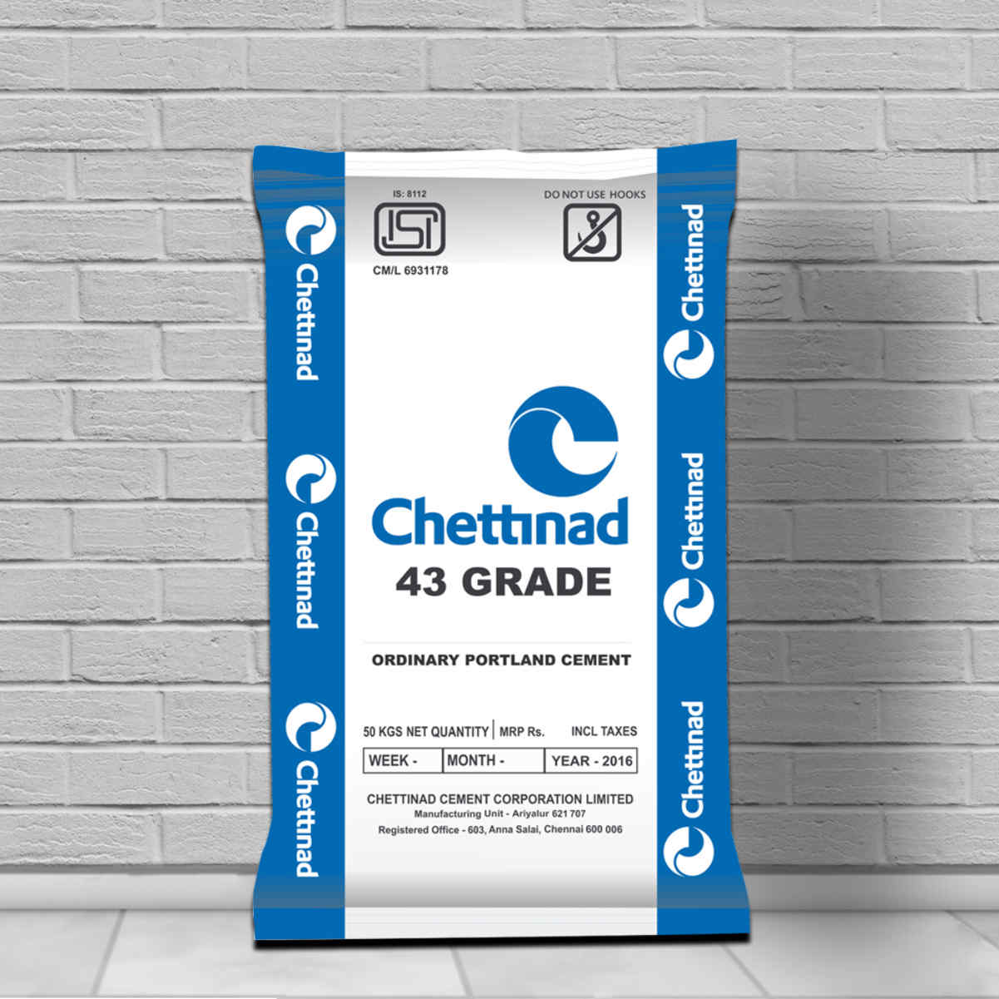
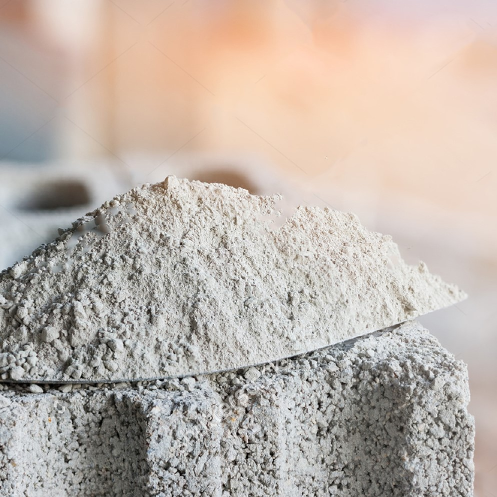
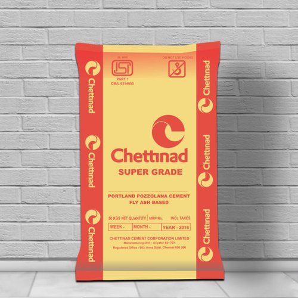
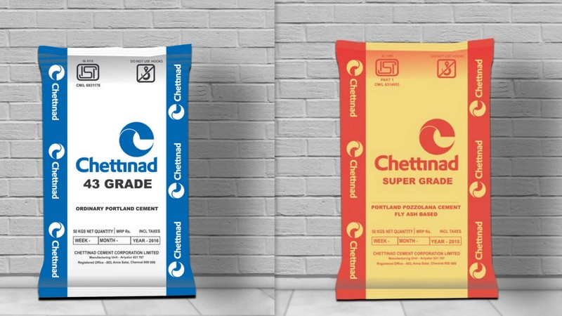

Products
Cement OPC Grade
Ordinary Portland cement (OPC) is manufactured by grinding together OPC Clinker (95–97%) along with gypsum (3–5%). OPC is graded according to their compressive strength. The grade indicates the minimum compression strength (MPa or N/mm2) that the cement will attain after 28 days of setting.OPC Grade 43

OPC 43 grade cement is a cheaper choice over OPC 53 grade cement. OPC 43 grade cement also has fine grinding of clinkers but comparatively less than OPC 53. This causes it to have a slower gain in strength and also the comparative lack of magnesium by a difference of -0.01% also affects the heat of hydration performance.
OPC 43 grade cement is generally used for
+ General Civil Engineering construction work.
+ RCC works(preferably where grade of concrete is up to M-30).
+ Precast items such as blocks, tiles, pipes etc.
+ Asbestos products such as sheets and pipes.
+ Non-structural works such as plastering & flooring.
Brands Available
Chettinad, JSW, Ultra-Tech, Chettinad (Anjani)
Get your Quote Now
OPC Grade 53

OPC 53 grade cement is the most preferred building and construction material for projects that require high tensile strength. This cement grade is finer than grade 43. The fineness generates early gain in strength, but along with high heat of hydration.
OPC 53 grade cement is used in the projects which require higher strength like
+ RCC works(Preferably where grade of concrete is M-25 and above)
+ Precast concrete items such as paving blocks, tiles building blocks etc.
+ Pre-stressed concrete components
+ Runways, concrete Roads.
+ Construction Bridges.
Brands Available
Chettinad, JSW, Ultra-Tech, Chettinad (Anjani)
Get your Quote Now
Comparison w.r.t IS:4031-PART 6-1988

Compressive strength of cement is determined by compressive strength test on mortar cubes compacted by means of a standard vibration machine. The Standard sand as per IS:650 (Ennore, TN) is used for the preparation of cement mortar. The specimen is in the form of cubes 70.6mm x 70.6mm x 70.6mm. (IS 1080:1982)
IS 650: 1992 “ Specification for Standard Sand for Testing of Cement”
The compressive strength attained in N/Sq.mm at 28 days age when a standard cube of 70.6mm x 70.6mm x 70.6mm is subjected to standard compressive test is termed as Grade of Cement.
Thus, the OPC 43 grade cement should attain the compression strength of 43MPa within 28 days of setting.
And similarly the OPC 53 grade cement should attain the compression strength of 53MPa within 28 days of setting.
Cement PPC Grade
Portland Pozzolana Cement (PPC) is special blended cement useful in general construction work and is especially suitable for applications in aggressive environmental conditions.PPC utilizes two types of Pozzolanas:
Fly ash Covered under IS:1489 (Part I)
Calcined clay Covered under IS:1489 (Part II)
PPC with fly ash as Pozzolana is more popular in the country owing to the easy availability of quality fly ash from modern coal-based thermal power plant. With the advent of fly ash based PPC, the availability and use of calcined clay based PPC has more or less been decimated.
PPC

This Blended hydraulic cements are produced by intergrinding or blending Portland cement and supplementary cementitious materials such as fly ash. The use of blended cements in ready-mix concrete reduces mixing water and bleeding, improves workability and finishing, inhibits sulphate attack and the alkali-aggregate reaction, and reduces the heat of hydration. Depending on the constituents, blended cements can confer desirable qualities to concrete such as lighter colour, workability, or low heat of hydration. By putting waste to work, blended cements contribute to sustainable development.
PPC grade cement is generally used for mass concreting works such as
+ Dykes
+ Sewage pipes
+ Dams
+ It is also used as replacement for OPC.
Brands Available
Chettinad, JSW, Ultra-Tech, Chettinad (Anjani)
Get your Quote Now
PPC vs OPC

The technology of construction has developed to great heights in the last few decades, aiding the construction of massive sky-scrapers, hydraulic structures, etc. A significant credit to this steady improvement in the field is due to the development of a variety of cements crafted for specific needs. The two of the most popular are OPC cement (Ordinary Portland Cement) and PPC cement (Portland Pozzolana Cement). The former is the most widely used cement for varied purposes including the making of concrete, mortars and the construction of non-specialised buildings, houses, bridges, pavements and so on. In contrast, the latter is preferred for works like masonry, plastering, tiling and waterproofing.
The incorporation of pozzolana particles leads to the development of a cement that uses less OPC but has greater durability and strength. PPC grade cement has a longer settling time and a lower compressive strength, initially. However, it is known to reach the same results as OPC in the long run.
As it uses a lesser concentration of cement, it is cheaper and more environmentally friendly than OPC.
As per IS 1489 : 2015
Compressive Strength (MPa)
of PPC Grade
3 Days (72 ± 1 h) 16 MPa.
7 Days (168 ± 2 h) 22 MPa.
28 Days (672 ± 4 h) 33 MPa.